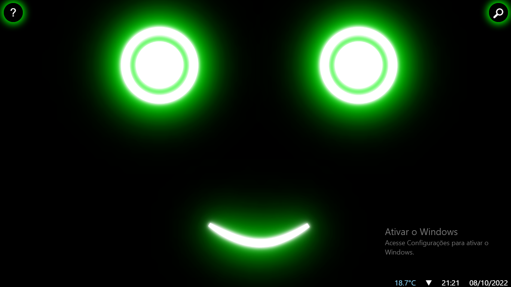

Fardo home é um dos produtos que pretendo criar ao abrir minha empresa, ele é um assistente virtual
doméstico que pode realizar coisas simples como dizer a temperatura atual ou fazer uma pesquisa, até
conectar-se e gerenciar outros dispositivos e aplicativos que também sejam da marca Fardo. Possibilitando
assim uma automação (residêncial ou industrial) ou apenas sendo um simples assistente virtual que todos
podem ter em sua casa.

Aparência padrão do FardoAparência festiva de halloween do FardoAparência festiva de natal do Fardo
Você pode ver mais sobre o Fardo em seu instagram: